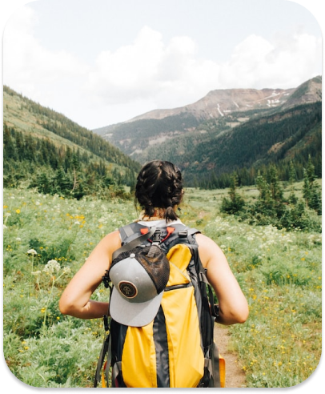
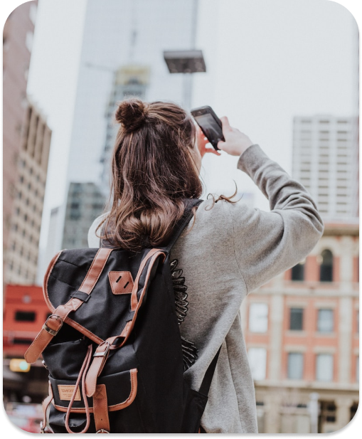
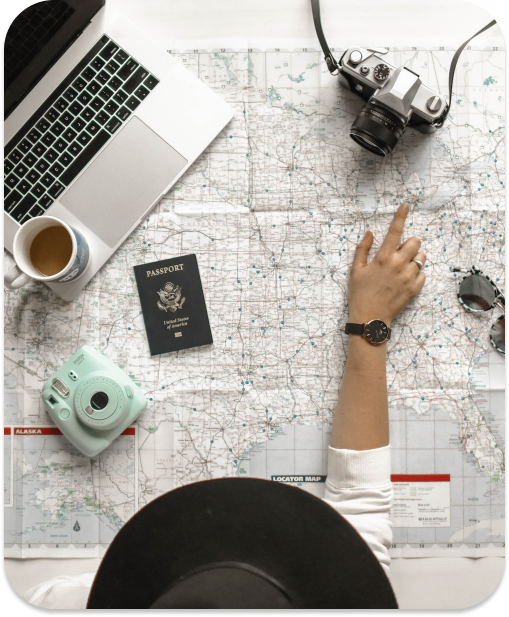

Mẹo Cần Khi Đi Du Lịch
xem thêm

Mẹo Cần Khi Đi Du Lịch
xem thêm
- Mẹo 1: Việc di chuyển bằng phương tiện đường bộ và đường sắt sẽ giúp bạn tận hưởng trọn vẹn cảnh đẹp. Nhưng nhớ là những nơi nào không quá xa bạn nhé.
- Mẹo 2: Hãy hỏi người dân địa phương nhiều hơn về nơi bạn muốn tới, đó là một phương án an toàn khi có hằng hà sa số phương án trên smartphone.
- Mẹo 3: Hãy làm hành trang bạn nhẹ nhàng có thể để chuyến đi bạn không quá “cồng kềnh”.
- Mẹo 4: Nếu có thể, hãy chọn những suất ăn chay trên máy bay vì nó không chỉ giúp bạn đảm bảo sức khỏe khi đi du lịch mà còn lợi ích về lâu dài.
- Mẹo 5: Nên chọn các chuyến bay sáng sớm hoặc tối muộn vì lúc này giá vé sẽ rẻ hơn.

- Mẹo 1: Để đề phòng nơi bạn không có internet, bạn hãy tải bản đồ ngoại tuyến và ứng dụng dịch thuật để tránh lạc đường bạn nhé.
- Mẹo 2: Tìm hiểu lịch trình giao thông tại địa phương để bạn có cho mình một chuyến đi giá rẻ và còn an toàn nữa nhé.
- Mẹo 3: Trước khi lên đường, hãy scan và gửi email cho mình bản sao của những giấy tờ quan trọng như hộ chiếu, bằng lái xe, bảo hiểm, visa, vé, v.v. và những thông tin cần thiết để thay thế khi có tình huống khẩn cấp.
- Mẹo 4: Không mang những vật giá trị bên người, hãy cất giấu nó ở nơi an toàn nhà bạn. Nếu bạn mang theo, nó sẽ thu hút sự chú ý của “đạo tặc” đấy.
